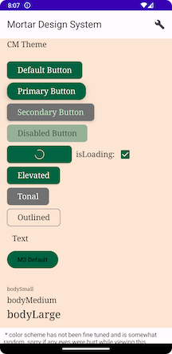
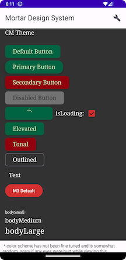

Welcome to Mortar Android

Mortar is an application design system. It is meant to make building UI consistent, flexible and most importantly fast. The goal of Mortar is to allow app developers to focus on building new features - and less on implementation details of common UI components. This project is the Android implementation of Mortar for Jetpack Compose.
This implementation of Mortar leans heavily on Android platform standards, and will use material 3 (m3) components where possible. The structure of this design system is based on Atomic Design
Architecture
The Mortar design system architecture is based on having a single source of truth. That single source of truth is the mortar design data JSON file. These JSON files are used by Mortar-Android to code-generate themes per product/brand. This JSON data is a cross-platform owned definition of product theme implementations of MDS.
Single Source of Truth
The design data JSON files define the themes and their properties. These files include definitions for colors, typography, size/shapes, and component styles, which are used across different parts of the application to ensure consistency and flexibility.
Code Generation Process
The code generation process takes the JSON files and generates platform-agnostic theme implementations. This is handled by the token-compiler module, which is a Kotlin annotation processor. It reads the JSON definitions and generates Kotlin code representing the theme components. The generated files are placed in the themes module.
Mortar Theme Implementation
The MortarTheme class serves as a container for the generated theme values. It includes the following components:
ThemeColors: Defines the color scheme for the theme.
ThemeTypography: Defines the typography styles for the theme.
ThemeComponents: Defines the styles for various UI components.
These components are platform-agnostic and can be used in different environments, such as Kotlin Multiplatform (KMP).
Compose Mapper
The ComposeMapper object contains functions to convert the platform-agnostic theme values to Compose-specific values. These functions map the raw theme values (e.g., colors, typography) to their Compose counterparts (e.g., Color, TextStyle).
Compose Mortar Theme
The MortarComposeTheme class is the Compose-specific representation of the theme. It uses the values provided by the ComposeMapper to define the theme and its components in a format compatible with Jetpack Compose.
Component API philosophy
For this project, the design of our components API is more restrictive than common APIs for a compose component. We could have a "slot" api similar to material components, but that opens the components up to being misused and inconsistent. The decision to allow flexibility is ultimately a cross platform decision on the philosophy of customizability. Flexible components might get misused, but restrictive apis might never be used (if consuming developers find them too restrictive).
Also worth noting that even though there are two custom component definitions, the less custom components we have, the better. Driving default component (ex. button) styles from semantic tokens will be easier to maintain long term compared to having a component token for every single component MDS supports.
Caveats
This project serves as a demonstration of a potential architecture for the Mortar design system. Here are some important caveats:
- Simplified Token Coverage: In a full-scale implementation, the generated themes would include all design tokens, such as radius, elevation, and more. This demo focuses on a subset to quickly illustrate the concept. Additionally token name and structure would probably be different, as this was mainly modeled after material for simplicity.
- Manual Mapping: Currently, the adaptation from Mortar themes to Compose themes involves manual boilerplate code. In a real-world solution, this would likely be automated through code generation to reduce manual effort and potential errors. Consumers of the library would use a compose version of a generated theme (ex. HebMortar would have a HebMortarCompose generated theme...).
- Material 3 Wrapping: The decision to wrap the Material 3 theme is intentional for this demo. It was used to showcase a potential approach to still take advantage of existing M3 components with custom styling. In a complete design system, the schema and approach would be collaboratively developed by the design and engineering teams.
- Versioning: versioning the design data schema would need to be worked out cross platform, to ensure changes to the schema don't break any of the automation or theme implementation. Breaking changes would need to be versioned appropriately.
Project Modules
docs: location of the documentation you are currently reading.compose-components: a list of standard components that are very commonly used in most apps. Common examples are headers, buttons, text fields, etc...compose-core: base component code and logic that is common to all compose implementation.demo-mortar: a demo application that can be used to show mortar components in action.themes: a set of generated product specific themes.token-compiler: Kotlin annotation processor that generates the kotlin code for product specific themes. The themes are generated from Mortar design system json files.token-model: houses the data contract for our MDS theming system, as well as the schema for MDS token data json files.
Versioning
Mortar follows semantic versioning. All artifacts are versioned on changes to any modules.
See more info at the dev guide